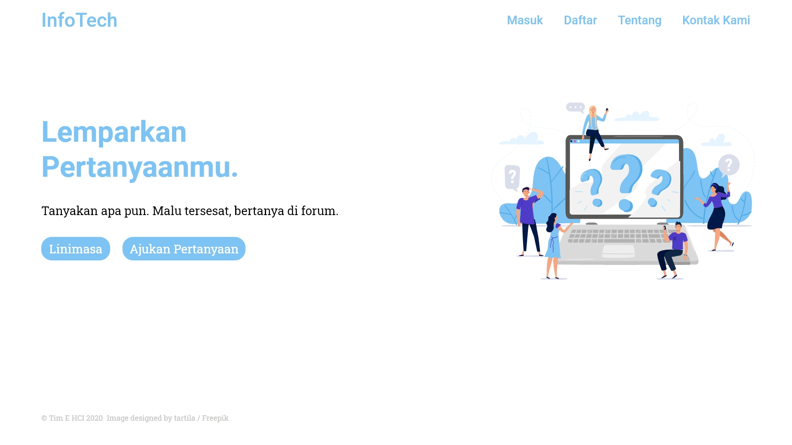
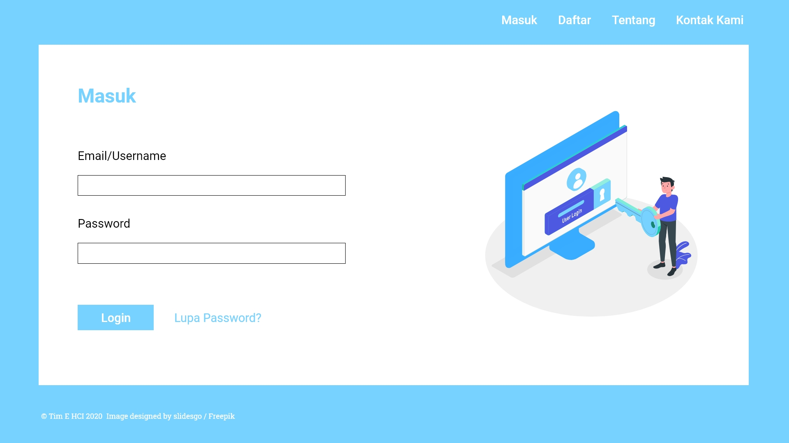
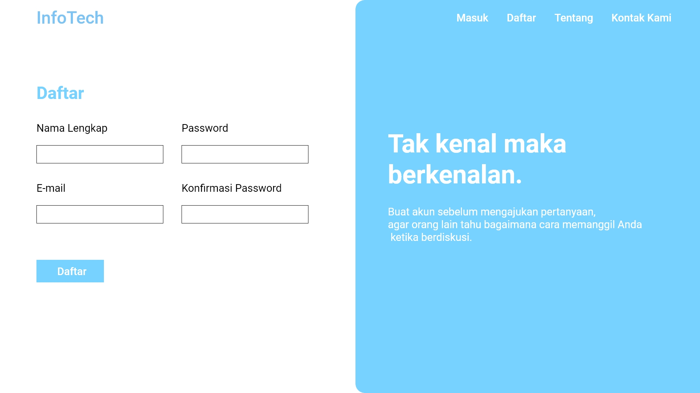
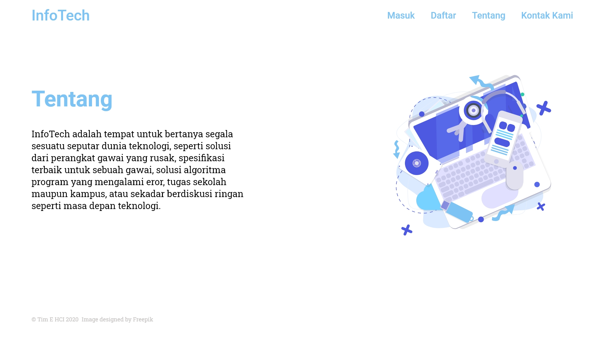
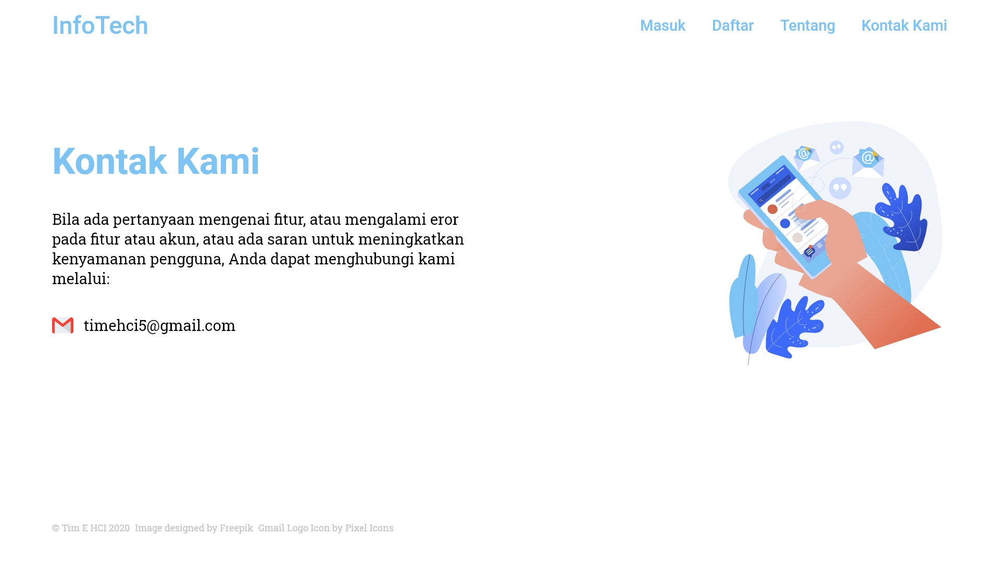
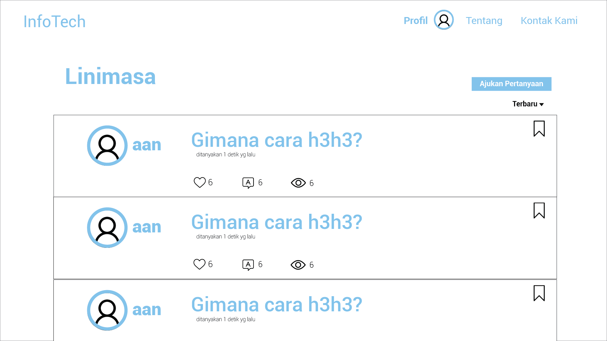
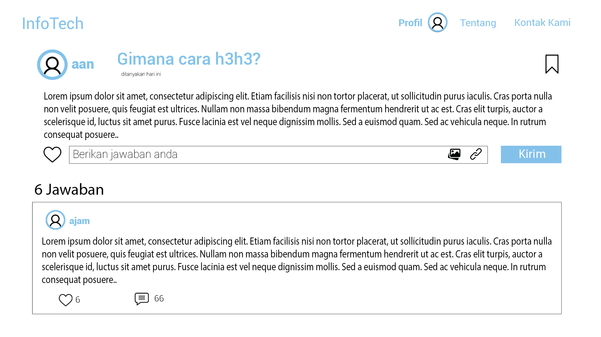
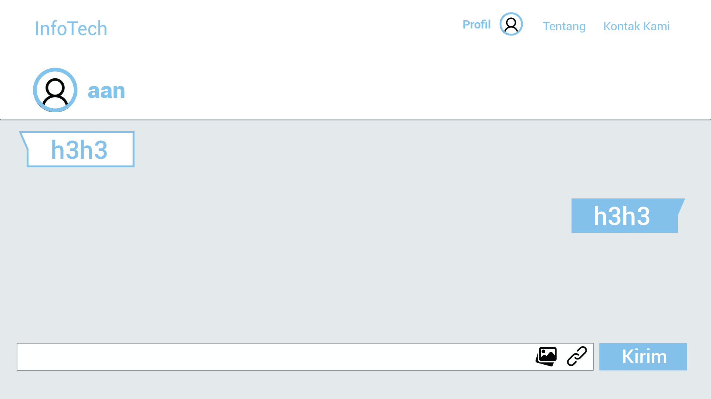

Mockup Design
Home
- 
Login
- 
Daftar
- 
Tentang Kami
- 
Kontak
- 
Ajukan Pertanyaan

Linimasa
- 
Post
- 
Chat
- 
Team E Human Computer Interaction terdiri dari:
Website InfoTech merupakan website yang berisi konten tanya jawab seputar dunia ilmu teknologi atau yang biasa disebut IT. Website ini terinspirasi dari Stackoverflow, Brainly, atau sejenisnya. Di website ini kita dapat bertanya dan menjawab konten dari orang lain berupa permasalahannya mengenai device yang mereka miliki. Seperti contohnya apabila mereka memiliki masalah bluescreen pada laptopnya ataupun bootloop pada smartphone, mereka dapat bertanya di kolom ajukan pertanyaan kemudian bagi pengguna yang pernah mengalami hal seperti itu, dapat membantu menyelesaikannya. Dengan website tanya jawab berbahasa Indonesia ini, bagi mereka yang kurang memahami Bahasa Inggris dapat mudah memahami Langkah-langkah dengan baik.
Website ini bertujuan untuk menyelesaikan masalah pengguna website sebagai pemilik smart device dimana pasti akan menemukan masalah di dalam penggunaannya. Tidak hanya itu, website ini pun dapat menjadi sarana sharing dan berbagi pengalaman sesama pengguna dalam menggunakan smart device.
Website ini memiliki beberapa fitur diantaranya:
Berdasarkan kuisioner pertama yang kami sebarkan, kami mendapati bahwa sekitar 94% dari total 58 responden menyatakan pernah mengalami kerusakan pada gawai mereka. Dan ketika gawai mereka mengalami kerusakan sekitar 70% dari mereka mencari solusinya melalui internet dan sisanya bertanya kepada teman. Dan dari mereka yang mengatakan mencari lewat internet, sebanyak 48 responden mengatakan bahwa masih merasa kesulitan dalam mencari solusinya. Sehingga berdasarkan hasil dari kuisione tersebut kami menyimpulkan bahwa pengguna membutuhkan satu wadah terpusat sebagai sarana tanya-jawab agar orang-orang dari berbagai latar belakang terutama dari yang berlatar belakang informasi dan teknologi agar dapat memberikan jawaban yang terpercaya dan sejelas-jelasnya.
Klik disini untuk melihat laporan secara keseluruhan